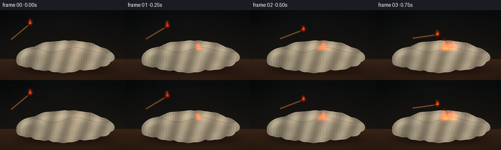
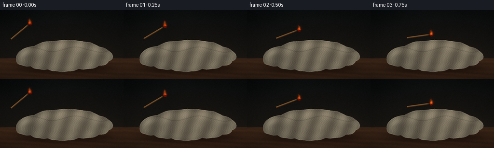
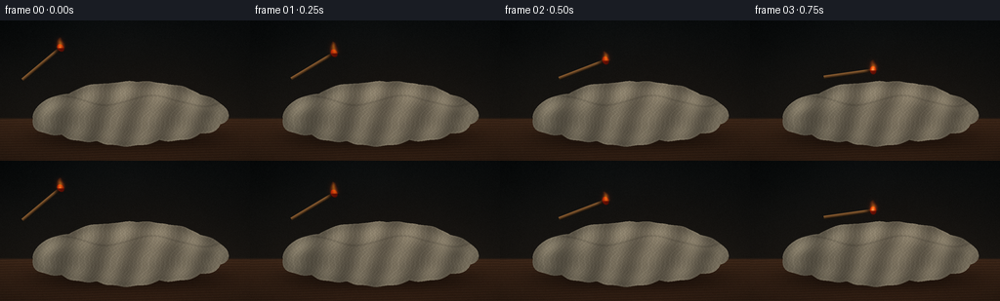
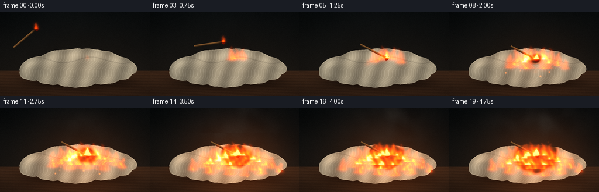
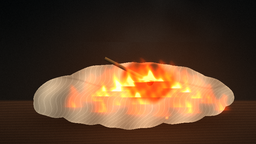
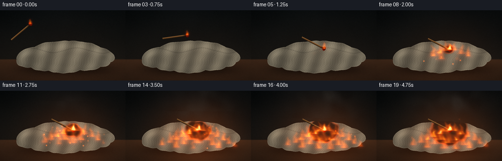
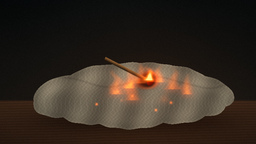
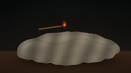
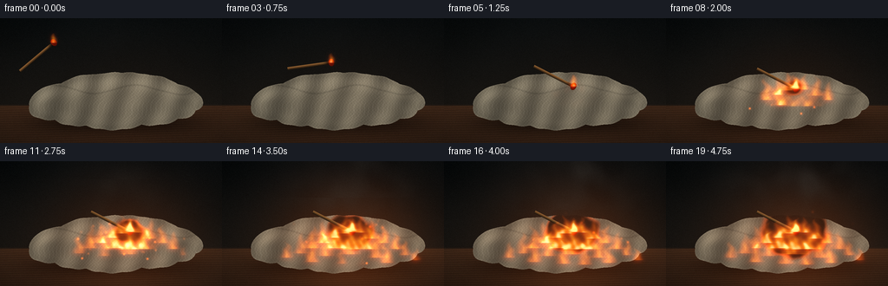

CODING AGENTS AS PIXEL WORLD MODELS
traex/DeepSeek-V4.1-Flash · material_0029
点击播放 · 原生 RGB 像素
逐轮保存的候选
回放视频、检查图与代码变化。
每份候选均可单独播放。实际图片检查记录在下方工具轨迹中。
候选 01播放与检查图
点击播放 · 原生 RGB 像素


展开代码变化
--- 上一保存版本
+++ 本次保存版本
@@ -0,0 +1,474 @@
+from pathlib import Path
+
+import numpy as np
+from PIL import Image
+from scipy.ndimage import gaussian_filter
+
+import artifact_io
+
+
+OUT_W, OUT_H = 256, 144
+SS = 3
+W, H = OUT_W * SS, OUT_H * SS
+N_FRAMES = 20
+FPS = 4.0
+
+
+def smoothstep(edge0, edge1, value):
+ t = np.clip((value - edge0) / (edge1 - edge0), 0.0, 1.0)
+ return t * t * (3.0 - 2.0 * t)
+
+
+def normalized_noise(rng, sigma):
+ field = gaussian_filter(rng.normal(size=(H, W)).astype(np.float32), sigma)
+ field -= field.min()
+ field /= max(float(field.max()), 1e-6)
+ return field
+
+
+def ellipse_distance(x, y, cx, cy, rx, ry, angle=0.0):
+ ca, sa = np.cos(angle), np.sin(angle)
+ dx, dy = x - cx, y - cy
+ lx = ca * dx + sa * dy
+ ly = -sa * dx + ca * dy
+ return (lx / rx) ** 2 + (ly / ry) ** 2
+
+
+def segment_distance(x, y, ax, ay, bx, by):
+ vx, vy = bx - ax, by - ay
+ wx, wy = x - ax, y - ay
+ length2 = max(vx * vx + vy * vy, 1e-5)
+ t = np.clip((wx * vx + wy * vy) / length2, 0.0, 1.0)
+ dx = wx - t * vx
+ dy = wy - t * vy
+ return np.sqrt(dx * dx + dy * dy), t
+
+
+def mix(a, b, t):
+ return a * (1.0 - t[..., None]) + b * t[..., None]
+
+
+def build_assets():
+ rng = np.random.default_rng(29)
+ n_broad = normalized_noise(rng, 30 * SS)
+ n_mid = normalized_noise(rng, 9 * SS)
+ n_fine = normalized_noise(rng, 2.3 * SS)
+ n_fold = normalized_noise(rng, 4.5 * SS)
+ n_smoke = normalized_noise(rng, 8 * SS)
+ n_char = normalized_noise(rng, 3.5 * SS)
+
+ yy, xx = np.mgrid[0:H, 0:W].astype(np.float32)
+ x = xx / SS
+ y = yy / SS
+
+ # Broad, irregular paper mound assembled from overlapping crumpled sheets.
+ blobs = [
+ (70, 97, 38, 19, -0.22),
+ (95, 100, 42, 24, -0.10),
+ (128, 101, 55, 28, 0.02),
+ (165, 99, 48, 24, 0.14),
+ (192, 96, 35, 18, 0.31),
+ (91, 84, 36, 17, -0.30),
+ (123, 82, 43, 19, -0.12),
+ (157, 83, 45, 20, 0.12),
+ (183, 83, 31, 16, 0.29),
+ (57, 91, 25, 13, -0.42),
+ (211, 91, 25, 13, 0.42),
+ ]
+ pile_field = np.full((H, W), 20.0, dtype=np.float32)
+ height = np.zeros((H, W), dtype=np.float32)
+ tone = np.zeros((H, W), dtype=np.float32)
+ for index, (cx, cy, rx, ry, angle) in enumerate(blobs):
+ d = ellipse_distance(x, y, cx, cy, rx, ry, angle)
+ irregular = d + 0.075 * (n_mid - 0.5) + 0.035 * np.sin(x * 0.29 + y * 0.17 + index)
+ pile_field = np.minimum(pile_field, irregular)
+ contribution = np.exp(-2.6 * np.maximum(d, 0.0))
+ height += contribution * (0.76 + 0.22 * (index % 4) / 3.0)
+ tone += contribution * ((index * 0.618) % 1.0)
+ pile_mask = pile_field < 1.0
+ tone = tone / np.maximum(height, 1e-4)
+ height = height + 0.48 * n_mid + 0.16 * n_fold
+
+ gy, gx = np.gradient(height)
+ normal_x = -gx * 11.0
+ normal_y = -gy * 11.0
+ normal_z = np.ones_like(height)
+ norm = np.sqrt(normal_x**2 + normal_y**2 + normal_z**2)
+ normal_x /= norm
+ normal_y /= norm
+ normal_z /= norm
+
+ # Paper-towel quilting and crumpled fold creases.
+ warp_x = x + 1.8 * (n_mid - 0.5) + 0.55 * np.sin(y * 0.34)
+ warp_y = y + 1.5 * (n_fold - 0.5) + 0.45 * np.sin(x * 0.28)
+ dimple = np.sin(warp_x * 2.35) * np.sin(warp_y * 2.15)
+ dimple = smoothstep(0.58, 0.96, dimple)
+ crease_phase = x * 0.205 + y * 0.13 + 3.4 * n_mid + 0.75 * np.sin(y * 0.21)
+ crease = np.exp(-((np.sin(crease_phase * 3.1) / 0.23) ** 2))
+ broad_fold = np.sin(x * 0.17 + 2.5 * n_broad + y * 0.055)
+ fine_fiber = 0.5 + 0.5 * np.sin(x * 1.8 + y * 0.43 + 6.0 * n_fine)
+
+ return {
+ "x": x,
+ "y": y,
+ "n_broad": n_broad,
+ "n_mid": n_mid,
+ "n_fine": n_fine,
+ "n_fold": n_fold,
+ "n_smoke": n_smoke,
+ "n_char": n_char,
+ "pile_mask": pile_mask,
+ "pile_field": pile_field,
+ "normal": (normal_x, normal_y, normal_z),
+ "tone": tone,
+ "dimple": dimple,
+ "crease": crease,
+ "broad_fold": broad_fold,
+ "fine_fiber": fine_fiber,
+ }
+
+
+ASSETS = build_assets()
+X = ASSETS["x"]
+Y = ASSETS["y"]
+
+
+def background_and_table(fire_growth, glow):
+ n_broad = ASSETS["n_broad"]
+ n_mid = ASSETS["n_mid"]
+ n_fine = ASSETS["n_fine"]
+
+ top = np.array([0.035, 0.047, 0.050], dtype=np.float32)
+ bottom = np.array([0.095, 0.083, 0.069], dtype=np.float32)
+ blend = np.clip(Y / 106.0, 0.0, 1.0)[..., None]
+ wall = top * (1.0 - blend) + bottom * blend
+ wall += (0.018 * (n_broad - 0.5) + 0.007 * (n_mid - 0.5))[..., None]
+
+ table_mask = smoothstep(99.0, 102.0, Y)
+ grain = (
+ 0.5
+ + 0.23 * np.sin(Y * 2.4 + 2.5 * n_mid + X * 0.055)
+ + 0.16 * np.sin(Y * 6.5 + X * 0.12 + 5.0 * n_broad)
+ + 0.11 * (n_fine - 0.5)
+ )
+ wood = np.stack(
+ [
+ 0.165 + 0.080 * grain,
+ 0.103 + 0.052 * grain,
+ 0.066 + 0.030 * grain,
+ ],
+ axis=-1,
+ )
+ table_depth = np.clip((Y - 99.0) / 45.0, 0.0, 1.0)[..., None]
+ wood *= 1.15 - 0.33 * table_depth
+ image = wall * (1.0 - table_mask[..., None]) + wood * table_mask[..., None]
+
+ # Soft occlusion under the paper pile.
+ shadow = np.exp(
+ -((X - 133.0) / 96.0) ** 4
+ - ((Y - 120.0) / 13.0) ** 2
+ )
+ image *= 1.0 - 0.55 * shadow[..., None]
+
+ # Slight warm bounce and the dynamic fire glow.
+ image += glow[..., None] * np.array([0.23, 0.085, 0.018], dtype=np.float32)
+ image += (fire_growth * 0.012 * (n_broad - 0.5))[..., None]
+
+ vignette = np.clip(1.08 - 0.22 * (((X - 128.0) / 145.0) ** 2 + ((Y - 82.0) / 105.0) ** 2), 0.55, 1.0)
+ return image * vignette[..., None]
+
+
+def paper_layer(image, frame_index, glow, fire_growth):
+ mask = ASSETS["pile_mask"]
+ nx, ny, nz = ASSETS["normal"]
+ n_broad = ASSETS["n_broad"]
+ n_mid = ASSETS["n_mid"]
+ n_fine = ASSETS["n_fine"]
+ tone = ASSETS["tone"]
+
+ light = np.array([-0.48, -0.72, 0.50], dtype=np.float32)
+ light /= np.linalg.norm(light)
+ ndotl = np.clip(nx * light[0] + ny * light[1] + nz * light[2], 0.0, 1.0)
+ rim = np.clip(1.0 - nz, 0.0, 1.0)
+
+ base = np.array([0.80, 0.745, 0.625], dtype=np.float32)
+ tint = 0.94 + 0.09 * tone
+ paper = base[None, None, :] * tint[..., None]
+ paper *= (0.90 + 0.16 * n_broad + 0.06 * (n_mid - 0.5))[..., None]
+ paper *= (0.70 + 0.30 * ndotl)[..., None]
+ paper *= (0.90 + 0.14 * ASSETS["broad_fold"])[..., None]
+ paper += (0.075 * ASSETS["crease"] + 0.018 * ASSETS["dimple"] + 0.009 * (ASSETS["fine_fiber"] - 0.5))[..., None]
+ paper += (0.055 * rim)[..., None]
+
+ # Thin darker lines show the edges of separate towels in the pile.
+ layer_phase = Y - 82.0 - 5.2 * np.sin(X * 0.065 + 0.8) - 4.0 * (n_mid - 0.5)
+ layer_line = np.exp(-((layer_phase / 1.0) ** 2))
+ paper *= 1.0 - 0.12 * layer_line[..., None]
+
+ # Edge shading keeps the pile visually separate from the table.
+ soft = gaussian_filter(mask.astype(np.float32), 1.8 * SS)
+ inside = gaussian_filter(mask.astype(np.float32), 5.5 * SS)
+ edge = np.clip(soft - inside, 0.0, 1.0)
+ paper *= 1.0 - 0.36 * edge[..., None]
+
+ # Charring begins at the match head and grows through the loose towels.
+ char_dist = np.sqrt(((X - 148.0) / 1.03) ** 2 + ((Y - 81.0) / 0.82) ** 2)
+ char_dist += 7.0 * (ASSETS["n_char"] - 0.5) + 1.5 * np.sin(X * 0.24 + Y * 0.17)
+ burn_radius = 3.5 + 2.45 * max(0.0, frame_index - 5.0)
+ burn = smoothstep(burn_radius + 4.0, burn_radius - 5.0, char_dist)
+ burn *= smoothstep(4.5, 6.5, frame_index)
+ char_color = np.array([0.075, 0.048, 0.032], dtype=np.float32)
+ paper = mix(paper, char_color[None, None, :], np.clip(burn * 0.93, 0.0, 1.0))
+
+ ember_ring = np.exp(-((char_dist - burn_radius) / 2.6) ** 2)
+ flicker = 0.72 + 0.28 * np.sin(frame_index * 2.4 + X * 0.13 + Y * 0.07)
+ ember = ember_ring * burn * flicker * smoothstep(5.0, 7.0, frame_index)
+ paper += ember[..., None] * np.array([0.65, 0.16, 0.015], dtype=np.float32)
+
+ # Firelight falls across the paper and catches its raised folds.
+ paper += glow[..., None] * (0.75 + 0.55 * ndotl[..., None]) * np.array([0.32, 0.12, 0.025], dtype=np.float32)
+ paper += (fire_growth * 0.035 * ndotl)[..., None] * np.array([1.0, 0.46, 0.12], dtype=np.float32)
+
+ image[mask] = paper[mask]
+ return image
+
+
+def match_pose(frame_index):
+ flight = [
+ ((62.0, 28.0), -40.0),
+ ((86.0, 33.5), -31.0),
+ ((108.0, 41.0), -21.0),
+ ((126.0, 51.0), -8.0),
+ ((140.0, 64.0), 9.0),
+ ]
+ if frame_index < len(flight):
+ return flight[frame_index]
+ settle = min(1.0, (frame_index - 5.0) / 1.4)
+ return ((149.0 + 1.2 * settle, 78.5 + 3.0 * settle), 27.0)
+
+
+def render_match(image, frame_index):
+ (hx, hy), angle_deg = match_pose(frame_index)
+ angle = np.deg2rad(angle_deg)
+ ux, uy = np.cos(angle), np.sin(angle)
+ length = 53.0
+ tx, ty = hx - ux * length, hy - uy * length
+
+ body_dist, along = segment_distance(X, Y, tx, ty, hx, hy)
+ half_width = 1.48
+ body_alpha = smoothstep(half_width + 0.65, half_width - 0.25, body_dist)
+ body_alpha *= (along > 0.035) & (along < 0.995)
+
+ cross = -(X - tx) * uy + (Y - ty) * ux
+ side_light = np.clip(0.58 - cross * 0.26, 0.16, 0.92)
+ char_amount = smoothstep(0.80, 0.99, along)
+ wood = np.stack(
+ [
+ 0.62 * side_light,
+ 0.41 * side_light,
+ 0.21 * side_light,
+ ],
+ axis=-1,
+ )
+ wood = mix(wood, np.array([0.065, 0.035, 0.020], dtype=np.float32)[None, None, :], char_amount)
+ wood += (0.018 * (ASSETS["n_fine"] - 0.5))[..., None]
+
+ # The swollen match head is slightly angled with the stick.
+ head_d = ellipse_distance(X, Y, hx, hy, 3.4, 4.5, angle)
+ head_alpha = smoothstep(1.04, 0.86, head_d)
+ head_shade = np.clip(0.82 - (X - hx) * 0.05 - (Y - hy) * 0.03, 0.38, 1.0)
+ head_color = np.stack(
+ [
+ 0.29 * head_shade,
+ 0.045 * head_shade,
+ 0.018 * head_shade,
+ ],
+ axis=-1,
+ )
+ head_color += np.clip(0.45 - 0.3 * head_d, 0.0, 0.22)[..., None] * np.array([0.55, 0.08, 0.02])
+
+ alpha = np.maximum(body_alpha, head_alpha)
+ match_color = wood * (1.0 - head_alpha[..., None]) + head_color * head_alpha[..., None]
+ image[:] = image * (1.0 - alpha[..., None]) + match_color * alpha[..., None]
+ return (hx, hy), angle
+
+
+def flame_density(frame_index, match_head):
+ base_heat = 0.0
+ if frame_index < 5:
+ height = 11.0 + 1.4 * np.sin(frame_index * 2.1)
+ width = 3.6
+ sway = -1.0 - 0.7 * np.sin(frame_index * 1.7)
+ else:
+ height = 15.0 + 1.6 * np.sin(frame_index * 2.3)
+ width = 4.5
+ sway = 0.3 * np.sin(frame_index * 1.4)
+
+ v = (match_head[1] - Y) / height
+ vv = np.clip(v, 0.0, 1.0)
+ shift = sway * vv**1.7 + 0.85 * np.sin(frame_index * 1.9 + vv * 7.0) * vv
+ u = X - (match_head[0] + shift)
+ w = width * (1.0 - vv) ** 0.60 + 1.2
+ match_flame = np.exp(-(u / w) ** 2 * 1.7) * (1.0 - vv) ** 0.36
+ match_flame *= (v >= 0.0) & (v <= 1.0)
+ density = 0.90 * match_flame
+
+ tongues = [
+ (149, 80, 0.0, 19, 6.5, 0.2),
+ (140, 82, 1.7, 25, 8.0, 1.7),
+ (160, 81, 2.0, 22, 7.0, 2.8),
+ (128, 86, 3.4, 24, 8.5, 4.1),
+ (173, 88, 3.8, 28, 9.0, 5.2),
+ (116, 91, 5.1, 30, 10.0, 0.8),
+ (186, 92, 5.4, 25, 8.0, 3.6),
+ (104, 96, 7.0, 31, 10.5, 2.1),
+ (198, 98, 7.3, 24, 8.5, 4.8),
+ (132, 97, 6.0, 37, 12.0, 5.9),
+ (164, 97, 6.3, 36, 12.0, 1.2),
+ (91, 101, 9.2, 28, 10.0, 3.0),
+ (209, 103, 9.8, 20, 7.5, 5.6),
+ (148, 104, 8.3, 42, 14.0, 0.4),
+ (119, 105, 9.4, 34, 11.0, 4.5),
+ (178, 107, 10.1, 34, 11.5, 2.4),
+ (74, 107, 11.6, 23, 9.0, 5.0),
+ (222, 110, 12.5, 17, 7.0, 1.8),
+ (103, 112, 12.0, 27, 10.5, 0.9),
+ (190, 113, 12.2, 26, 10.0, 3.9),
+ (137, 114, 13.0, 32, 11.0, 5.8),
+ (162, 116, 13.4, 29, 10.5, 2.7),
+ ]
+
+ for bx, by, delay, target_h, target_w, phase in tongues:
+ active = smoothstep(delay - 0.8, delay + 1.5, frame_index)
+ if active <= 0.0:
+ continue
+ local_h = target_h * (0.18 + 0.82 * active)
+ local_w = target_w * (0.52 + 0.48 * active)
+ v = (by - Y) / local_h
+ vv = np.clip(v, 0.0, 1.0)
+ sway = (1.4 + 0.11 * local_w) * np.sin(phase + frame_index * 1.45 + vv * 5.8) * vv**1.55
+ curl = local_w * 0.20 * np.sin(phase * 1.7 + frame_index * 2.15 - vv * 8.5) * vv
+ u = X - (bx + sway + curl)
+ w = local_w * (1.0 - vv) ** 0.68 + 1.25
+ tongue = np.exp(-(u / w) ** 2 * 1.55) * (1.0 - vv) ** 0.42
+ tongue *= (v >= 0.0) & (v <= 1.0)
+ density += tongue * active * (0.70 + 0.12 * (phase % 1.0))
+ base_heat += active * np.exp(-((X - bx) / (local_w * 0.85)) ** 2 - ((Y - by) / 4.0) ** 2)
+
+ turbulence = (
+ 0.79
+ + 0.13 * np.sin(X * 0.43 + 1.7 * np.sin(Y * 0.29 + frame_index * 1.7) + frame_index * 1.1)
+ + 0.08 * np.sin(X * 0.82 - Y * 0.37 - frame_index * 2.3)
+ )
+ density *= turbulence
+ return density, base_heat
+
+
+def render_fire(image, frame_index, match_head, glow):
+ density, base_heat = flame_density(frame_index, match_head)
+ density = np.maximum(density - 0.035, 0.0)
+
+ blurred = gaussian_filter(density, 2.2 * SS)
+ core = np.clip((density - 0.43) * 2.6, 0.0, 1.0)
+ hot = np.clip((density - 0.84) * 4.8, 0.0, 1.0)
+ alpha = np.clip(density * 0.84 + blurred * 0.28, 0.0, 0.96)
+
+ outer = np.array([1.0, 0.235, 0.018], dtype=np.float32)
+ middle = np.array([1.0, 0.57, 0.045], dtype=np.float32)
+ inner = np.array([1.0, 0.90, 0.45], dtype=np.float32)
+ white = np.array([1.0, 0.99, 0.82], dtype=np.float32)
+ color = outer[None, None, :] * (1.0 - core[..., None]) + middle[None, None, :] * core[..., None]
+ color = color * (1.0 - hot[..., None]) + inner[None, None, :] * hot[..., None]
+ color = color * (1.0 - (hot * 0.35)[..., None]) + white[None, None, :] * (hot * 0.35)[..., None]
+
+ image *= 1.0 - 0.34 * alpha[..., None]
+ image += color * alpha[..., None] * 0.92
+ image += blurred[..., None] * np.array([0.50, 0.095, 0.010], dtype=np.float32)
+ image += base_heat[..., None] * np.array([0.12, 0.020, 0.002], dtype=np.float32)
+ return image
+
+
+def smoke_veil(image, frame_index, fire_growth):
+ if frame_index < 8:
+ return image
+ amount = smoothstep(8.0, 14.0, frame_index)
+ shift_y = int((frame_index - 8) * 7 * SS)
+ shift_x = int(4 * SS * np.sin(frame_index * 0.7))
+ noise = np.roll(ASSETS["n_smoke"], shift_y, axis=0)
+ noise = np.roll(noise, shift_x, axis=1)
+
+ cx = 151.0 + 3.5 * np.sin(frame_index * 0.55)
+ cy = 48.0 - 2.3 * (frame_index - 8)
+ env = np.exp(-((X - cx) / (42.0 + 1.8 * (frame_index - 8))) ** 2 - ((Y - cy) / 42.0) ** 2)
+ wisps = np.clip((noise - 0.43) * 2.2, 0.0, 1.0) * env
+ alpha = np.clip(wisps * 0.36 * amount, 0.0, 0.34)
+ smoke_color = np.array([0.24, 0.225, 0.205], dtype=np.float32)
+ image = image * (1.0 - alpha[..., None]) + smoke_color[None, None, :] * alpha[..., None]
+ return image
+
+
+def ember_particles(image, frame_index, fire_growth):
+ if frame_index < 6:
+ return image
+ rng = np.random.default_rng(71)
+ particles = []
+ for _ in range(36):
+ bx = rng.uniform(91.0, 211.0)
+ by = rng.uniform(91.0, 118.0)
+ birth = rng.uniform(6.0, 15.0)
+ vx = rng.uniform(-2.8, 2.8)
+ vy = rng.uniform(4.0, 8.5)
+ phase = rng.uniform(0.0, np.pi * 2.0)
+ particles.append((bx, by, birth, vx, vy, phase))
+
+ additive = np.zeros((H, W, 3), dtype=np.float32)
+ for bx, by, birth, vx, vy, phase in particles:
+ age = frame_index - birth
+ if age < 0.0 or age > 5.2:
+ continue
+ px = bx + vx * age + 2.4 * np.sin(phase + age * 2.1)
+ py = by - vy * age + 1.1 * np.sin(phase * 1.3 + age * 1.6)
+ fade = np.clip(1.0 - age / 5.2, 0.0, 1.0)
+ flicker = 0.62 + 0.38 * np.sin(phase * 2.7 + frame_index * 3.0)
+ radius = 1.2 + 0.10 * age
+ spot = np.exp(-((X - px) ** 2 + (Y - py) ** 2) / (radius**2))
+ additive += spot[..., None] * np.array([1.0, 0.30, 0.025], dtype=np.float32) * (fade * flicker * 0.85)
+ image += additive
+ return image
+
+
+def render_frame(frame_index):
+ fire_growth = smoothstep(5.0, 15.0, frame_index)
+ flicker = 0.90 + 0.08 * np.sin(frame_index * 2.3) + 0.035 * np.sin(frame_index * 5.1)
+ fire_center_x = 149.0 + 4.0 * np.sin(frame_index * 0.45)
+ fire_center_y = 89.0
+ glow = np.exp(-((X - fire_center_x) / 82.0) ** 2 - ((Y - fire_center_y) / 66.0) ** 2)
+ glow *= (0.08 + 0.92 * fire_growth) * flicker
+
+ image = background_and_table(fire_growth, glow)
+ image = paper_layer(image, frame_index, glow, fire_growth)
+ image = smoke_veil(image, frame_index, fire_growth)
+ match_head, _ = render_match(image, frame_index)
+ image = render_fire(image, frame_index, match_head, glow)
+ image = ember_particles(image, frame_index, fire_growth)
+
+ # Faint airborne soot and deterministic film grain.
+ grain_rng = np.random.default_rng(400 + frame_index)
+ grain = grain_rng.normal(0.0, 0.009, size=(H, W, 1)).astype(np.float32)
+ image += grain
+ image = np.clip(image, 0.0, 1.0)
+
+ small = Image.fromarray((image * 255.0 + 0.5).astype(np.uint8), mode="RGB")
+ small = small.resize((OUT_W, OUT_H), Image.Resampling.LANCZOS)
+ return np.asarray(small, dtype=np.uint8)
+
+
+def main():
+ frames = np.stack([render_frame(i) for i in range(N_FRAMES)], axis=0)
+ case_dir = Path(__file__).resolve().parent
+ artifact_io.save(frames, case_dir)
+ print(f"saved {frames.shape} at {FPS:g} fps to {case_dir}")
+
+
+if __name__ == "__main__":
+ main()
候选 02播放与检查图
点击播放 · 原生 RGB 像素


展开代码变化
--- 上一保存版本
+++ 本次保存版本
@@ -191,14 +191,21 @@
ndotl = np.clip(nx * light[0] + ny * light[1] + nz * light[2], 0.0, 1.0)
rim = np.clip(1.0 - nz, 0.0, 1.0)
- base = np.array([0.80, 0.745, 0.625], dtype=np.float32)
- tint = 0.94 + 0.09 * tone
+ base = np.array([0.67, 0.625, 0.525], dtype=np.float32)
+ tint = 0.92 + 0.10 * tone
paper = base[None, None, :] * tint[..., None]
- paper *= (0.90 + 0.16 * n_broad + 0.06 * (n_mid - 0.5))[..., None]
- paper *= (0.70 + 0.30 * ndotl)[..., None]
- paper *= (0.90 + 0.14 * ASSETS["broad_fold"])[..., None]
- paper += (0.075 * ASSETS["crease"] + 0.018 * ASSETS["dimple"] + 0.009 * (ASSETS["fine_fiber"] - 0.5))[..., None]
- paper += (0.055 * rim)[..., None]
+ paper *= (0.86 + 0.16 * n_broad + 0.07 * (n_mid - 0.5))[..., None]
+ paper *= (0.67 + 0.33 * ndotl)[..., None]
+ paper *= (0.88 + 0.14 * ASSETS["broad_fold"])[..., None]
+ paper += (0.040 * ASSETS["crease"] + 0.013 * ASSETS["dimple"] + 0.007 * (ASSETS["fine_fiber"] - 0.5))[..., None]
+ paper += (0.025 * rim)[..., None]
+
+ # Quilted embossing and small torn-fiber shadows break up the broad sheets.
+ warp_x = X + 1.8 * (n_mid - 0.5) + 0.55 * np.sin(Y * 0.34)
+ warp_y = Y + 1.5 * (ASSETS["n_fold"] - 0.5) + 0.45 * np.sin(X * 0.28)
+ quilt = np.sin(warp_x * 1.75 + 0.8 * np.sin(warp_y * 0.9)) * np.sin(warp_y * 1.62)
+ paper *= (0.94 + 0.055 * quilt)[..., None]
+ paper *= 1.0 - (0.035 * ASSETS["dimple"])[..., None]
# Thin darker lines show the edges of separate towels in the pile.
layer_phase = Y - 82.0 - 5.2 * np.sin(X * 0.065 + 0.8) - 4.0 * (n_mid - 0.5)
@@ -226,8 +233,8 @@
paper += ember[..., None] * np.array([0.65, 0.16, 0.015], dtype=np.float32)
# Firelight falls across the paper and catches its raised folds.
- paper += glow[..., None] * (0.75 + 0.55 * ndotl[..., None]) * np.array([0.32, 0.12, 0.025], dtype=np.float32)
- paper += (fire_growth * 0.035 * ndotl)[..., None] * np.array([1.0, 0.46, 0.12], dtype=np.float32)
+ paper += glow[..., None] * (0.72 + 0.28 * ndotl[..., None]) * np.array([0.16, 0.052, 0.008], dtype=np.float32)
+ paper += (fire_growth * 0.024 * ndotl)[..., None] * np.array([1.0, 0.42, 0.09], dtype=np.float32)
image[mask] = paper[mask]
return image
@@ -294,7 +301,7 @@
def flame_density(frame_index, match_head):
- base_heat = 0.0
+ base_heat = np.zeros_like(X, dtype=np.float32)
if frame_index < 5:
height = 11.0 + 1.4 * np.sin(frame_index * 2.1)
width = 3.6
@@ -314,51 +321,54 @@
density = 0.90 * match_flame
tongues = [
- (149, 80, 0.0, 19, 6.5, 0.2),
- (140, 82, 1.7, 25, 8.0, 1.7),
- (160, 81, 2.0, 22, 7.0, 2.8),
- (128, 86, 3.4, 24, 8.5, 4.1),
- (173, 88, 3.8, 28, 9.0, 5.2),
- (116, 91, 5.1, 30, 10.0, 0.8),
- (186, 92, 5.4, 25, 8.0, 3.6),
- (104, 96, 7.0, 31, 10.5, 2.1),
- (198, 98, 7.3, 24, 8.5, 4.8),
- (132, 97, 6.0, 37, 12.0, 5.9),
- (164, 97, 6.3, 36, 12.0, 1.2),
- (91, 101, 9.2, 28, 10.0, 3.0),
- (209, 103, 9.8, 20, 7.5, 5.6),
- (148, 104, 8.3, 42, 14.0, 0.4),
- (119, 105, 9.4, 34, 11.0, 4.5),
- (178, 107, 10.1, 34, 11.5, 2.4),
- (74, 107, 11.6, 23, 9.0, 5.0),
- (222, 110, 12.5, 17, 7.0, 1.8),
- (103, 112, 12.0, 27, 10.5, 0.9),
- (190, 113, 12.2, 26, 10.0, 3.9),
- (137, 114, 13.0, 32, 11.0, 5.8),
- (162, 116, 13.4, 29, 10.5, 2.7),
+ (149, 80, 0.0, 16, 6.5, 0.2),
+ (141, 83, 1.8, 22, 8.0, 1.7),
+ (159, 82, 2.4, 19, 7.0, 2.8),
+ (129, 88, 4.0, 21, 8.5, 4.1),
+ (173, 89, 4.7, 24, 9.0, 5.2),
+ (116, 94, 6.3, 26, 10.0, 0.8),
+ (187, 94, 6.7, 22, 8.0, 3.6),
+ (104, 100, 8.2, 27, 10.5, 2.1),
+ (200, 101, 8.6, 21, 8.5, 4.8),
+ (132, 100, 7.2, 31, 12.0, 5.9),
+ (165, 101, 7.7, 30, 12.0, 1.2),
+ (91, 106, 10.0, 25, 10.0, 3.0),
+ (211, 108, 10.6, 18, 7.5, 5.6),
+ (148, 107, 9.1, 36, 14.0, 0.4),
+ (120, 109, 10.3, 29, 11.0, 4.5),
+ (178, 111, 11.0, 29, 11.5, 2.4),
+ (75, 111, 12.3, 20, 9.0, 5.0),
+ (223, 114, 13.0, 15, 7.0, 1.8),
+ (104, 116, 12.7, 23, 10.5, 0.9),
+ (190, 117, 12.8, 22, 10.0, 3.9),
+ (138, 118, 13.5, 27, 11.0, 5.8),
+ (162, 119, 13.8, 25, 10.5, 2.7),
]
+ ignition = smoothstep(4.4, 6.7, frame_index)
for bx, by, delay, target_h, target_w, phase in tongues:
- active = smoothstep(delay - 0.8, delay + 1.5, frame_index)
+ active = smoothstep(delay - 0.5, delay + 1.25, frame_index) * ignition
if active <= 0.0:
continue
local_h = target_h * (0.18 + 0.82 * active)
local_w = target_w * (0.52 + 0.48 * active)
v = (by - Y) / local_h
vv = np.clip(v, 0.0, 1.0)
- sway = (1.4 + 0.11 * local_w) * np.sin(phase + frame_index * 1.45 + vv * 5.8) * vv**1.55
- curl = local_w * 0.20 * np.sin(phase * 1.7 + frame_index * 2.15 - vv * 8.5) * vv
+ sway = (1.2 + 0.09 * local_w) * np.sin(phase + frame_index * 1.45 + vv * 5.8) * vv**1.55
+ curl = local_w * 0.27 * np.sin(phase * 1.7 + frame_index * 2.15 - vv * 8.5) * vv
+ curl += local_w * 0.10 * np.sin(phase * 0.6 - vv * 13.0 + frame_index) * vv**1.2
u = X - (bx + sway + curl)
- w = local_w * (1.0 - vv) ** 0.68 + 1.25
- tongue = np.exp(-(u / w) ** 2 * 1.55) * (1.0 - vv) ** 0.42
+ w = local_w * (1.0 - vv) ** 0.72 + 1.15
+ w *= 0.91 + 0.09 * np.sin(vv * 13.0 + phase * 2.3 + frame_index)
+ tongue = np.exp(-(u / w) ** 2 * 1.85) * (1.0 - vv) ** 0.46
tongue *= (v >= 0.0) & (v <= 1.0)
- density += tongue * active * (0.70 + 0.12 * (phase % 1.0))
+ density += tongue * active * (0.56 + 0.11 * (phase % 1.0))
base_heat += active * np.exp(-((X - bx) / (local_w * 0.85)) ** 2 - ((Y - by) / 4.0) ** 2)
turbulence = (
- 0.79
- + 0.13 * np.sin(X * 0.43 + 1.7 * np.sin(Y * 0.29 + frame_index * 1.7) + frame_index * 1.1)
- + 0.08 * np.sin(X * 0.82 - Y * 0.37 - frame_index * 2.3)
+ 0.82
+ + 0.11 * np.sin(X * 0.43 + 1.7 * np.sin(Y * 0.29 + frame_index * 1.7) + frame_index * 1.1)
+ + 0.07 * np.sin(X * 0.82 - Y * 0.37 - frame_index * 2.3)
)
density *= turbulence
return density, base_heat
@@ -368,14 +378,14 @@
density, base_heat = flame_density(frame_index, match_head)
density = np.maximum(density - 0.035, 0.0)
- blurred = gaussian_filter(density, 2.2 * SS)
- core = np.clip((density - 0.43) * 2.6, 0.0, 1.0)
- hot = np.clip((density - 0.84) * 4.8, 0.0, 1.0)
- alpha = np.clip(density * 0.84 + blurred * 0.28, 0.0, 0.96)
-
- outer = np.array([1.0, 0.235, 0.018], dtype=np.float32)
- middle = np.array([1.0, 0.57, 0.045], dtype=np.float32)
- inner = np.array([1.0, 0.90, 0.45], dtype=np.float32)
+ blurred = gaussian_filter(density, 2.8 * SS)
+ core = np.clip((density - 0.36) * 2.5, 0.0, 1.0)
+ hot = np.clip((density - 0.72) * 3.8, 0.0, 1.0)
+ alpha = np.clip(density * 0.73 + blurred * 0.36 - 0.075, 0.0, 0.94)
+
+ outer = np.array([1.0, 0.34, 0.025], dtype=np.float32)
+ middle = np.array([1.0, 0.66, 0.075], dtype=np.float32)
+ inner = np.array([1.0, 0.92, 0.48], dtype=np.float32)
white = np.array([1.0, 0.99, 0.82], dtype=np.float32)
color = outer[None, None, :] * (1.0 - core[..., None]) + middle[None, None, :] * core[..., None]
color = color * (1.0 - hot[..., None]) + inner[None, None, :] * hot[..., None]
@@ -383,8 +393,8 @@
image *= 1.0 - 0.34 * alpha[..., None]
image += color * alpha[..., None] * 0.92
- image += blurred[..., None] * np.array([0.50, 0.095, 0.010], dtype=np.float32)
- image += base_heat[..., None] * np.array([0.12, 0.020, 0.002], dtype=np.float32)
+ image += blurred[..., None] * np.array([0.36, 0.065, 0.006], dtype=np.float32)
+ image += base_heat[..., None] * np.array([0.10, 0.014, 0.001], dtype=np.float32)
return image
候选 03播放与检查图
点击播放 · 原生 RGB 像素
展开代码变化
--- 上一保存版本
+++ 本次保存版本
@@ -346,6 +346,18 @@
]
ignition = smoothstep(4.4, 6.7, frame_index)
+ fire_growth = smoothstep(5.0, 15.0, frame_index)
+
+ # A shared, billowing flame body unifies the separate tongues.
+ body_v = (101.5 - Y) / (28.0 + 2.5 * fire_growth)
+ body_vv = np.clip(body_v, 0.0, 1.0)
+ body_shift = 3.0 * np.sin(frame_index * 1.15 + body_vv * 3.2) * body_vv**1.35
+ body_u = (X - 150.0 - body_shift) / (41.0 + 3.5 * fire_growth)
+ body_w = np.exp(-(body_u**2 * 2.0 + (body_vv / 0.76) ** 2 * 1.55))
+ body_w *= (body_v >= 0.0) & (body_v <= 1.0)
+ body_w *= 0.62 + 0.38 * np.sin(X * 0.19 + Y * 0.23 + frame_index * 1.3) ** 2
+ density += body_w * ignition * 0.55
+
for bx, by, delay, target_h, target_w, phase in tongues:
active = smoothstep(delay - 0.5, delay + 1.25, frame_index) * ignition
if active <= 0.0:
@@ -378,10 +390,10 @@
density, base_heat = flame_density(frame_index, match_head)
density = np.maximum(density - 0.035, 0.0)
- blurred = gaussian_filter(density, 2.8 * SS)
- core = np.clip((density - 0.36) * 2.5, 0.0, 1.0)
- hot = np.clip((density - 0.72) * 3.8, 0.0, 1.0)
- alpha = np.clip(density * 0.73 + blurred * 0.36 - 0.075, 0.0, 0.94)
+ blurred = gaussian_filter(density, 2.4 * SS)
+ core = np.clip((density - 0.29) * 2.7, 0.0, 1.0)
+ hot = np.clip((density - 0.63) * 4.2, 0.0, 1.0)
+ alpha = np.clip(density * 0.64 + blurred * 0.43 - 0.055, 0.0, 0.94)
outer = np.array([1.0, 0.34, 0.025], dtype=np.float32)
middle = np.array([1.0, 0.66, 0.075], dtype=np.float32)
@@ -391,8 +403,8 @@
color = color * (1.0 - hot[..., None]) + inner[None, None, :] * hot[..., None]
color = color * (1.0 - (hot * 0.35)[..., None]) + white[None, None, :] * (hot * 0.35)[..., None]
- image *= 1.0 - 0.34 * alpha[..., None]
- image += color * alpha[..., None] * 0.92
+ image *= 1.0 - 0.24 * alpha[..., None]
+ image += color * alpha[..., None] * 0.90
image += blurred[..., None] * np.array([0.36, 0.065, 0.006], dtype=np.float32)
image += base_heat[..., None] * np.array([0.10, 0.014, 0.001], dtype=np.float32)
return image
候选 04播放与检查图
点击播放 · 原生 RGB 像素


展开代码变化
--- 上一保存版本
+++ 本次保存版本
@@ -296,6 +296,10 @@
alpha = np.maximum(body_alpha, head_alpha)
match_color = wood * (1.0 - head_alpha[..., None]) + head_color * head_alpha[..., None]
+ # Contact flame reflects onto the dark match head before the towels catch.
+ contact_glow = smoothstep(2.5, 4.5, frame_index) * (1.0 - smoothstep(7.0, 11.0, frame_index))
+ contact_heat = np.exp(-((X - hx) ** 2 + (Y - hy + 1.2) ** 2) / 7.5)
+ match_color += (contact_heat * contact_glow * 0.42)[..., None] * np.array([1.0, 0.18, 0.025])
image[:] = image * (1.0 - alpha[..., None]) + match_color * alpha[..., None]
return (hx, hy), angle
@@ -402,8 +406,9 @@
color = outer[None, None, :] * (1.0 - core[..., None]) + middle[None, None, :] * core[..., None]
color = color * (1.0 - hot[..., None]) + inner[None, None, :] * hot[..., None]
color = color * (1.0 - (hot * 0.35)[..., None]) + white[None, None, :] * (hot * 0.35)[..., None]
-
- image *= 1.0 - 0.24 * alpha[..., None]
+ color = np.clip(color + (blurred * 0.10)[..., None] * np.array([1.0, 0.55, 0.16]), 0.0, 1.0)
+
+ image *= 1.0 - 0.18 * alpha[..., None]
image += color * alpha[..., None] * 0.90
image += blurred[..., None] * np.array([0.36, 0.065, 0.006], dtype=np.float32)
image += base_heat[..., None] * np.array([0.10, 0.014, 0.001], dtype=np.float32)
@@ -480,7 +485,7 @@
image += grain
image = np.clip(image, 0.0, 1.0)
- small = Image.fromarray((image * 255.0 + 0.5).astype(np.uint8), mode="RGB")
+ small = Image.fromarray((image * 255.0 + 0.5).astype(np.uint8))
small = small.resize((OUT_W, OUT_H), Image.Resampling.LANCZOS)
return np.asarray(small, dtype=np.uint8)
可观测工具轨迹
实际执行的命令与返回图片。
命令 1exit 0
/bin/bash -c "pwd && rg --files -g '"'!*node_modules*'"' -g '"'!*.git*'"' | sed -n '1,200p'"
命令 2exit 0
/bin/bash -c "sed -n '1,240p' prompt.txt"
命令 3exit 0
/bin/bash -c "sed -n '1,260p' GENERATION_RULES.md"
命令 4exit 0
/bin/bash -c 'cat task_spec.json'
命令 5exit 0
/bin/bash -c "sed -n '1,260p' artifact_io.py"
命令 6exit 0
/bin/bash -c "sed -n '1,260p' player_template.html"
命令 7exit 0
/bin/bash -c "python - <<'PY' import importlib.util for m in ['numpy','PIL','cv2','scipy','imageio','matplotlib']: print(m, bool(importlib.util.find_spec(m))) PY"
命令 8exit 0
/bin/bash -c 'python generate.py'
命令 9exit 1
/bin/bash -c 'python generate.py'
命令 10exit 0
/bin/bash -c 'python generate.py'
命令 11exit 0
/bin/bash -c 'python generate.py'
命令 12exit 0
/bin/bash -c 'python generate.py'
命令 13exit 0
/bin/bash -c "python - <<'PY'
from pathlib import Path
import numpy as np
from PIL import Image
p=Path('.')
files=['generate.py','pixels.npz','index.html','inspection.png','transition_check.png']
for f in files:
print(f, (p/f).exists(), (p/f).stat().st_size if (p/f).exists() else '-')
frames=[np.asarray(Image.open(p/'frames'/f'{i:02d}.png')) for i in range(20)]
print('frames', len(frames), frames[0].shape, frames[0].dtype)
print('nonblank min/max/mean', frames[0].min(), frames[-1].max(), np.mean(frames[-1]))
print('unique colors first/last', len(np.unique(frames[0].reshape(-1,3),axis=0)), len(np.unique(frames[-1].reshape(-1,3),axis=0)))
PY"命令 14exit 0
/bin/bash -c 'git status --short'
视觉工具实际返回图片 1

视觉工具实际返回图片 2

视觉工具实际返回图片 3

视觉工具实际返回图片 4

视觉工具实际返回图片 5

视觉工具实际返回图片 6

视觉工具实际返回图片 7

保存候选 4 份；完成命令 14 次；可验证图片返回 7 张。原始 API 响应与完整日志保留在本地。